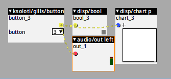
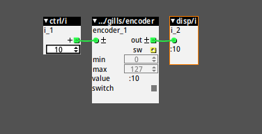

8.3. Gills Walkthrough
Getting Stuff In and Out
Audio In and Out
Connect a 6.35mm (1/4 inch) mono cable to one or both of the IN jacks on the left side of the rear panel. Turn up the IN and OUT volume knobs. To hear the sound, either connect a pair of headphones to the 6.35mm headphone jack front left, or connect the 6.35mm line outputs on the right side of the rear panel to a mixer, speakers, or similar gear.
Fire up the Object Finder (space key, double-click on the canvas, ...) and find the audio/in stereo and audio/out stereo objects. Connect them like in the video below.
That's about it. Any advanced objects on top of that are just for convenience or special configuration. There are objects that read or send out only a single channel, so you can pick up or send out signals from different places in the patch. There are objects that let you adjust the inputs' analog gain (audio/inconfig*), change the output mode and adjust headphone volume (audio/outconfig), and so on. Unfortunately these config objects can't be tweaked live due to hardware limitations.
By the way, you can of course place multiple audio/in in your patch to access the input signal in various places. You can also place multiple audio/out, and the respective signals you send to them will be summed together before the output. Though in most cases it is probably better to mix your signals mix/ object(s) - as these have a volume control for each input - then send the resulting signal(s) out via a single audio/out*.
Potentiometers
Gills has 10 potentiometers. You can get the value of any potentiometer via the ksoloti/gills/pot* objects. Let's have a look at pot p:
You can select which one of the 10 pots to read using the drop-down attribute.
In the above video you can see that the output value from pot p goes from 0 to 64. The "p" stands for "unipolar" in the Axoloti world. Broadly speaking, some inlets in objects expect a unipolar value (0 to 64), some a bipolar value (-64 to 64).
This is why there is also a pot b object ("bipolar") which is identical except that its output value range goes from -64 to 64. In other words, using a pot b and turning the knob to its center position, you would get close to a "0" value. It is just a convenience thing really. In past Axoloti libraries only a unipolar version was available, so in many cases you had to use a conv/unipolar2bipolar object or similar to get the range right.
If you look closely you will notice a "±" symbol next to the outlets (and inlets). This is to indicate that the output values (or expected/possible input values) are bipolar. However, The "+" and "±" symbols are merely visual indicators. Any checking, conversion or clamping, making sure that the values are in the right range, must be done by the object code itself. We'll get back to that at a (far away) later point, when we talk about editing existing objects and coding new ones.
Why are my pots so noisy?
Please note that the values read from the pots are the raw values picked up from the ADC, so even though the pot signals are hardware filtered on the Gills PCB, there is always a certain noise included. This is why the numbers dance around and seem unstable within a certain range.
If you need very steady values you will have to use other objects to smooth them out or quantize them. For example, math/smooth will filter the values even further, at the cost of a little DSP power. drj/math/mov_avg, a moving average, is also a good way to smooth out pots, however at the cost of some SRAM memory. Some objects introduce a "deadband", which means that the pot value will be steady within a certain range and will only change if it is moved out of that range. There are many more, more or less specialized objects in the factory and contrib libraries, and if you can't find what exactly you're after you can always ask on the Ksoloti Discord server, Modwiggler, the Lines forum (llllllll.co) or wherever.
Buttons
Gills has 4 momentary switches, and you can read them using the ksoloti/gills/button object.
As you can see in the video above, the button object outputs yellow wires. These are called Boolean, a mathematical term referring to the two logical states, also known as true/false, on/off, zero/one, yes/no and so on. That makes sense, since a button can only be either pressed or not pressed.
See how I plugged the yellow wires into blue (control rate) inlets? Heresy! Error: undefined behaviour! Just kidding. This is no problem at all, in fact it is encouraged. It shows that certain wire colours can indeed be plugged into inlets of other colours. When in doubt, just try it out, the worst that could happen is a dashed wire (which means the connection does not work).

Have a look at the above screenshot: I went ahead and plugged button 3 directly to an audio inlet. Note that the whole net is dashed now, not just the wire to the audio inlet. The patcher will not warn you and you can still take the patch live, but the dashed net will be completely disabled. In other words, when I press button 3 now, nothing at all will happen.
Encoder
Gills has 1 Encoder with included switch. Push down the top of the encoder knob to press the switch.
At the time of writing, there is one object that makes use of the encoder - ksoloti/gills/encoder.
The object lets you define the minimum and maximum values the encoder can reach.
Those wires are green
A colour I've never seen.
What now does it mean?
Green wires are used for "integer" values. We have seen that blue ("control") values have decimal digits, like 0.00, 63.99 and so on. Strictly speaking they have many mode decimal digits, like 0.000000001524... but the Patcher will round them to two digits after the dot. Anyway, green wires: they can only carry whole numbers, like 0, 1, 2, 3, or -268435456.
The reason that green integers exist in the Axoloti world: firstly, they can hold far bigger numbers than the "fractional" (blue) numbers whenever it is necessary. Secondly, they are more convenient for certain processes, like loading patches (you can't really load patch 3.4387 now, can you. Well, in fact you can possibly still send that fractional number to the respective patch load mechanism, and the decimal digits are discarded and you end up loading patch 3. But I digress.), loading and accessing tables, and so on.
The switch output is Boolean (yellow) and it behaves exactly like the buttons described above.
One more thing: the green inlet. Sending a number to it lets the encoder jump to that value immediately. This is useful for overriding the encoder value. This also happens during patch start, so you implement presets this way. Note that the encoder never exceeds its min and max values. Whatever you send to the inlet will be clipped inside that range.

Display
WIP WOP